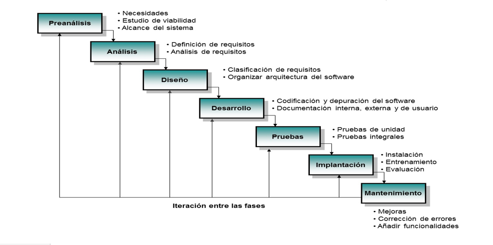
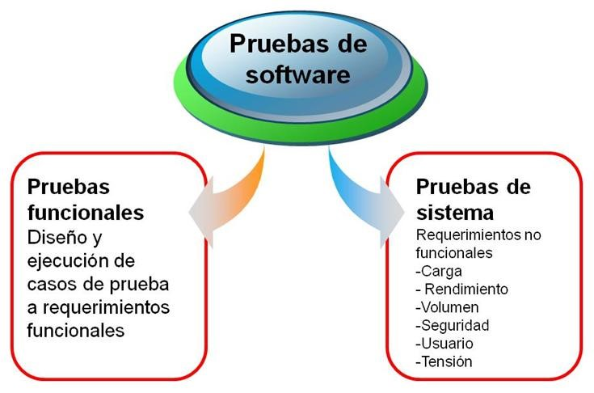
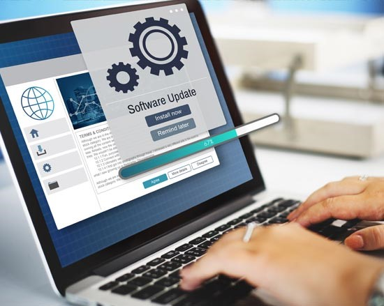

Etapas del Desarrollo de Software
Cuando se va a llevar a cabo el desarrollo de un sistema de información o más conocido en el mercado desarrollo de software, hay muchas requerimientos los cuales las personas y situaciones intervienen en el planteamiento del problema, se lleva a cabo la identificación general y especifica de la necesidad del cliente, el equipo desarrollador debe plantear su estrategia de desarrollo, recopilación de la información, maquetación y planeamiento del diseño del software, contenido y funcionalidades, pruebas y resultados, retroalimentación y modificaciones en base a la ejecución del test de funcionamiento, implementación y documentación, todo esto para brindar una solución de software a la medida que cumpla con los requerimientos y suplir las necesidades del cliente final, cada tarea normalmente es realizada por fases y por un equipo ejecutor, vamos a conocer las etapas del desarrollo del software.
Subsección 1: Etapa de Análisis y Requisitos
Inicialmente después de reconocer las necesidades del cliente se debe realizar una reunión con él para definir y plantear los requerimientos, especificaciones y características que debe cumplir el software, esta etapa es de suma importancia ya que de esta se definirá el producto final a entregar, el ingeniero debe saber traducir las necesidades del cliente y saberlo orientar de manera correcta para que el planteamiento del software sea lo más práctico y funcional posible, para que cumpla con sus objetivos de manera sencilla pero eficiente.
Subsección 2: Diseño y Arquitectura
Se refiere a determinar cómo funcionará de forma general sin entrar en detalles. Consiste en incorporar consideraciones de la implementación tecnológica, como el hardware, la red, etc. Se definen los casos de uso para cubrir las funciones que realizará el sistema, y se transforman las entidades definidas en el análisis de requisitos en clases de diseño, obteniendo un modelo cercano a la programación orientada a objetos

Subsección 3: Programación
Reducir un diseño a código puede ser la parte más obvia del trabajo de ingeniería de software, pero no es necesariamente la porción más larga. La complejidad y la duración de esta etapa está íntimamente ligada al o a los lenguajes de programación utilizados. En la codificación es donde se desarrolla todo el código del sistema por parte del programador esto se hace ya dependiendo de cada programador ya que cada programador tiene sus bases o formas para realizarlo, pero en si deben todos llegar al mismo objetivo de ofrecerle funcionalidad al sistema siempre y cuando apegando se a las especificaciones del cliente.
Subsección 4: Pruebas
Consiste en comprobar que el software realice correctamente las tareas indicadas en la especificación. Se considera una buena práctica el que las pruebas sean efectuadas por alguien distinto al desarrollador que la programó, idealmente un área de pruebas; sin perjuicio de lo anterior el programador debe hacer sus propias pruebas. En general hay dos grandes formas de organizar un área de pruebas, la primera es que esté compuesta por personal inexperto y que desconozca el tema de pruebas, de esta forma se evalúa que la documentación entregada sea de calidad, que los procesos descritos son tan claros que cualquiera puede entenderlos y el software hace las cosas tal y como están descritas. El segundo enfoque es tener un área de pruebas conformada por programadores con experiencia, personas que saben sin mayores indicaciones en qué condiciones puede fallar una aplicación y que pueden poner atención en detalles que personal inexperto no consideraría.
Subsección 5: Documentación
Todo lo concerniente a la documentación del propio desarrollo del software y de la gestión del proyecto, pasando por modelaciones (UML), diagramas, pruebas, manuales de usuario, manuales técnicos, etc; todo con el propósito de eventuales correcciones, usabilidad, mantenimiento futuro y ampliaciones al sistema.
Subsección 6: Mantenimiento
Mantener y mejorar el software para enfrentar errores descubiertos y nuevos requisitos. Esto puede llevar más tiempo incluso que el desarrollo inicial del software. Alrededor de 2/3 de toda la ingeniería de software tiene que ver con dar mantenimiento. Una pequeña parte de este trabajo consiste en arreglar errores, o bugs. La mayor parte consiste en extender el sistema para hacer nuevas cosas. De manera similar, alrededor de 2/3 de toda la Ingeniería civil, Arquitectura y trabajo de construcción es dar mantenimiento. Se puede decir que con la mejora continua garantiza la calidad del producto, ya que el estarla aplicando día con día es la mejor decisión que puede llegar a tener cualquier empresa, porque de esta manera evita grandes problemas en la elaboración o desarrollo de los productos. Esto es fundamental para todas las empresas ya que se vuelven competitivas, con mayor productividad y eficiencia.
